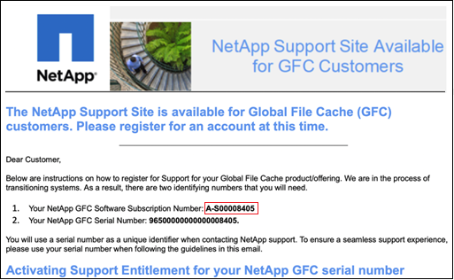

Request doc changes
Request doc changes Edit this page
Edit this page Learn how to contribute
Learn how to contributeGetting started
Contributors
You use Cloud Manager to deploy the Global File Cache Management Server and Global File Cache Core software in the working environment.
Enable Global File Cache using Cloud Manager
In this configuration you will deploy the Global File Cache Management Server and Global File Cache Core in the same working environment where you created your Cloud Volumes ONTAP system using Cloud Manager.
Watch this video to see the steps from start to finish.
Quick start
Get started quickly by following these steps or scroll down to the remaining sections for full details:
 Deploy Cloud Volumes ONTAP
Deploy Cloud Volumes ONTAPDeploy Cloud Volumes ONTAP in Azure or AWS and configure SMB file shares. For more information, see Launching Cloud Volumes ONTAP in Azure or Launching Cloud Volumes ONTAP in AWS.
 Deploy the Global File Cache Management Server
Deploy the Global File Cache Management ServerDeploy an instance of the Global File Cache Management Server in the same working environment as the instance of Cloud Volumes ONTAP.
 Deploy the Global File Cache Core
Deploy the Global File Cache CoreDeploy an instance, or multiple instances, of the Global File Cache Core in the same working environment as the instance of Cloud Volumes ONTAP and join it to your Active Directory domain.
 License Global File Cache
License Global File CacheConfigure the Global File Cache License Management Server (LMS) service on a Global File Cache Core instance. You will need your NSS Credentials or a Customer ID and Subscription Number provided by NetApp to activate your subscription.
 Deploy the Global File Cache Edge instances
Deploy the Global File Cache Edge instancesSee Deploying Global File Cache Edge instances to deploy the Global File Cache Edge instances in each remote location. This step is not done using Cloud Manager.
Deploy Cloud Volumes ONTAP as your storage platform
In the current release, Global File Cache supports Cloud Volumes ONTAP deployed in Azure or AWS. For detailed prerequisites, requirements, and deployment instructions, see Launching Cloud Volumes ONTAP in Azure or Launching Cloud Volumes ONTAP in AWS.
Note the following additional Global File Cache requirement:
-
You should configure SMB file shares on the instance of Cloud Volumes ONTAP.
If no SMB file shares are set up on the instance, then you are prompted to configure the SMB shares during the installation of the Global File Cache components.
Enable Global File Cache in your working environment
The Global File Cache wizard walks you through the steps to deploy the Global File Cache Management Server instance and the Global File Cache Core instance, as highlighted below.

-
Select the working environment where you deployed Cloud Volumes ONTAP.
-
In the Services panel, click Enable GFC.
-
Read the Overview page and click Continue.
-
If no SMB shares are available on the Cloud Volumes ONTAP instance, you are prompted to enter the SMB Server and SMB Share details to create the share now. For details about the SMB configuration, see Storage platform.
When finished, click Continue to create the SMB share.

-
On the Global File Cache Service page, enter the number of Global File Cache Edge instances you plan to deploy, and then make sure your system meets the requirements for Network Configuration and Firewall Rules, Active Directory settings, and Antivirus exclusions. See Prerequisites for more details.

-
After you have verified that the requirements have been met, or that you have the information to meet these requirements, click Continue.
-
Enter the admin credentials you will use to access to the Global File Cache Management Server VM and click Enable GFC Service. For Azure you enter the credentials as a user name and password; for AWS you select the appropriate key pair. You can change the VM/instance name if you want.

-
After the Global File Cache Management Service is successfully deployed, click Continue.
-
For the Global File Cache Core, enter the admin user credentials to join the Active Directory domain, and the service account user credentials. Then click Continue.
-
The Global File Cache Core instance must be deployed in the same Active Directory domain as the Cloud Volumes ONTAP instance.
-
The service account is a domain user and it is part of the BUILTIN\Backup Operators group on the Cloud Volumes ONTAP instance.

-
-
Enter the admin credentials you will use to access to the Global File Cache Core VM and click Deploy GFC Core. For Azure you enter the credentials as a user name and password; for AWS you select the appropriate key pair. You can change the VM/instance name if you want.

-
After the Global File Cache Core is successfully deployed, click Go to Dashboard.

The Dashboard shows that the Management Server instance and the Core instance are both On and working.
License your Global File Cache installation
Before you can use Global File Cache, you need to configure the Global File Cache License Management Server (LMS) service on a Global File Cache Core instance. You will need your NSS Credentials or a Customer ID and Subscription Number provided NetApp to activate your subscription.
In this example, we will configure the LMS service on a Core instance that you just deployed in the public cloud. This is a one-time process that sets up your LMS service.
-
Open the Global File Cache License Registration page on the Global File Cache Core (the Core you are designating as your LMS service) using the following URL. Replace <ip_address> with the IP address of the Global File Cache Core:
https://<ip_address>/lms/api/v1/config/lmsconfig.html -
Click “Continue to this website (not recommended)” to continue. A page that allows you to configure the LMS, or check existing license information, is displayed.

-
Choose the mode of registration:
-
“NetApp LMS” is used for customers who have purchased NetApp Global File Cache Edge licenses from NetApp or its certified partners. (Preferred)
-
“Legacy LMS” is used for existing or trial customers who have received a Customer ID through NetApp Support. (This option has been deprecated.)
-
-
For this example, click NetApp LMS, enter your Customer ID (preferably your email address), and click Register LMS.

-
Check for a confirmation email from NetApp that includes your GFC Software Subscription Number and Serial Number.

-
Click the NetApp LMS Settings tab.
-
Select GFC License Subscription, enter your GFC Software Subscription Number, and click Submit.

You will see a message that your GFC License Subscription was registered successfully and activated for the LMS instance. Any subsequent purchases will automatically be added to the GFC License Subscription.
-
Optionally, you can click the License Information tab to view all your GFC license information.
If you have determined that you need to deploy multiple Global File Cache Cores to support your configuration, click Add Core Instance from the Dashboard and follow the deployment wizard.
After you have completed your Core deployment, you need to deploy the Global File Cache Edge instances in each of your remote offices.
Deploy additional Core instances
If your configuration requires more than one Global File Cache Core to be installed because of a large number of Edge instances, you can add another Core to the working environment.
When deploying Edge instances, you will configure some to connect to the first Core and others to the second Core. Both Core instances access the same backend storage (your Cloud Volumes ONTAP instance) in the working environment.
-
From the Global File Cache Dashboard, click Add Core Instance.

-
Enter the admin user credentials to join the Active Directory domain, and the service account user credentials. Then click Continue.
-
The Global File Cache Core instance must be in the same Active Directory domain as the Cloud Volumes ONTAP instance.
-
The service account is a domain user and it is part of the BUILTIN\Backup Operators group on the Cloud Volumes ONTAP instance.
-
-
Enter the admin credentials you will use to access to the Global File Cache Core VM and click Deploy GFC Core. For Azure you enter the credentials as a user name and password; for AWS you select the appropriate key pair. You can change the VM name if you want.
-
After the Global File Cache Core is successfully deployed, click Go to Dashboard.

The Dashboard reflects the second Core instance for the working environment.